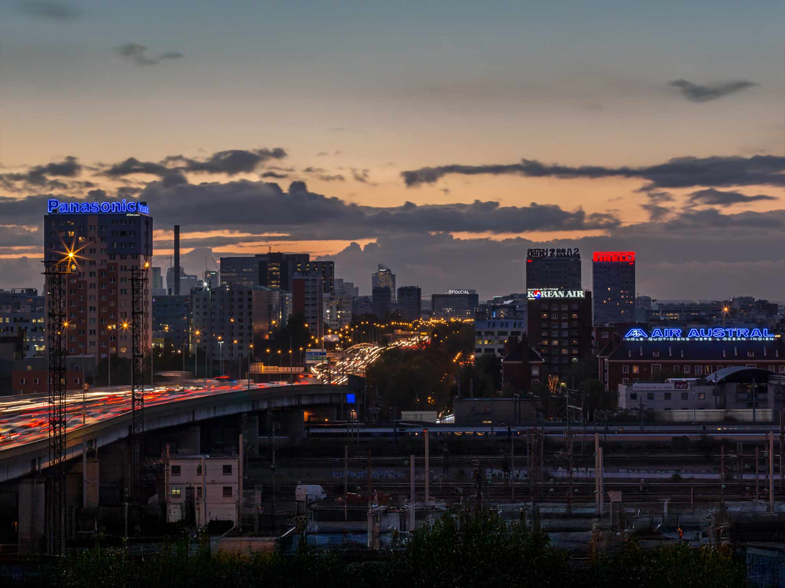

L'histoire de la publicité urbaine à Paris : de la Tour Eiffel aux écrans digitaux

Paris n'est pas seulement la Ville Lumière. Elle est aussi, depuis plus d'un siècle, le laboratoire mondial de la publicité urbaine. De la première colonne Morris plantée sur un boulevard haussmannien aux écrans digitaux haute définition qui animent aujourd'hui les places les plus fréquentées, la capitale française a toujours entretenu une relation singulière avec l'affichage. Un dialogue permanent entre art, commerce et architecture, dont chaque époque a réécrit les règles.
Les colonnes Morris et la naissance de l'affichage organisé (1868)
Avant 1868, Paris est un chaos d'affiches sauvages. Les murs des immeubles, les palissades de chantier, les clôtures de jardins — tout sert de support. Le préfet Haussmann, qui a redessiné la ville, ne supporte pas ce désordre visuel. C'est l'imprimeur Gabriel Morris qui propose la solution : un mobilier urbain dédié à l'affichage, élégant, cylindrique, intégré au paysage des boulevards. Les colonnes Morris deviennent immédiatement un symbole parisien. Pour la première fois, la publicité urbaine quitte le registre de l'anarchie pour entrer dans celui du design. Le principe fondateur est posé : à Paris, l'affichage doit respecter la ville autant qu'il l'anime.
Cette innovation est révolutionnaire par sa simplicité. En canalisant l'affichage dans un mobilier standardisé, Morris crée le premier réseau publicitaire urbain structuré au monde. Les annonceurs disposent désormais d'emplacements identifiés, visibles, mesurables. Les Parisiens, eux, découvrent qu'une affiche peut être autre chose qu'une nuisance : elle peut devenir un rendez-vous culturel, un repère dans la ville. Les affiches de Toulouse-Lautrec, de Mucha, de Chéret élèvent l'affichage au rang d'art graphique. Paris invente, sans le savoir, le concept de publicité intégrée au cadre de vie.
Les murs peints et les ponts de chemin de fer : l'ère des pionniers (1925-1940)
L'entre-deux-guerres marque une rupture d'échelle. Les annonceurs ne se contentent plus de colonnes et de panneaux : ils veulent des surfaces monumentales. Les murs pignons des immeubles, les flancs des ponts de chemin de fer, les façades aveugles des bâtiments industriels deviennent les nouvelles toiles de la publicité parisienne. C'est dans ce contexte que naît, en 1925, la société Lioté. L'entreprise se spécialise dans la peinture publicitaire sur les ouvrages ferroviaires — ces ponts et murs de soutènement que des millions de voyageurs aperçoivent chaque jour depuis les trains de banlieue.
Le métier exige un savoir-faire artisanal rare : il faut peindre à la main, souvent en hauteur, sur des surfaces irrégulières, avec des peintures capables de résister aux intempéries et aux vibrations du trafic ferroviaire. Les lettres doivent être lisibles en quelques secondes par un passager filant à 60 km/h. Cette contrainte forge une discipline qui deviendra la marque de fabrique de Lioté : la maîtrise technique au service de l'impact visuel. En quelques années, les murs peints Lioté jalonnent les lignes de chemin de fer de la région parisienne, transformant les infrastructures industrielles en supports de communication.
La Tour Eiffel illuminée pour Citroën : le coup de génie de 1925
Le 4 juillet 1925, Paris lève les yeux. La Tour Eiffel s'illumine de 250 000 ampoules qui dessinent le nom « CITROËN » sur toute la hauteur du monument. L'opération, orchestrée à l'occasion de l'Exposition internationale des Arts décoratifs, est un coup de tonnerre. Pour la première fois, un monument national devient le support d'une marque commerciale. Le dispositif, visible à 40 kilomètres par temps clair, restera en place jusqu'en 1934. C'est Lioté qui réalise l'installation de cette prouesse technique sans précédent — un chantier titanesque qui mobilise des dizaines d'ouvriers suspendus aux poutrelles métalliques de Gustave Eiffel.
L'impact dépasse largement le cadre publicitaire. André Citroën ne cherche pas seulement à vendre des automobiles : il veut associer son nom à la modernité, au progrès, à l'audace. Et il y parvient. La Tour Eiffel illuminée devient la première campagne de publicité monumentale de l'histoire. Elle établit un principe que les annonceurs n'oublieront jamais : le gigantisme, quand il est maîtrisé, ne choque pas — il fascine. Paris découvre que ses monuments peuvent porter des messages sans perdre leur majesté, à condition que l'exécution soit à la hauteur de l'ambition.
L'âge d'or des enseignes lumineuses (1960-1980)
Les Trente Glorieuses transforment Paris en vitrine de la société de consommation. Sur les toits des immeubles haussmanniens, des enseignes lumineuses géantes apparaissent — néons, tubes fluorescents, caissons rétroéclairés. La nuit parisienne prend des couleurs nouvelles. Jean-Jacques Lioté, qui reprend l'entreprise familiale, devient l'un des pionniers de cette révolution. Il développe un savoir-faire inédit dans la conception et l'installation de publicités lumineuses en toiture, ces dispositifs complexes qui doivent à la fois résister au vent, respecter les contraintes architecturales et produire un impact visuel maximal à des centaines de mètres.
Les grandes marques se disputent les emplacements les plus visibles : le sommet de la tour Montparnasse, les toits des Champs-Élysées, les façades du boulevard périphérique. Chaque installation est un défi d'ingénierie. Il faut calculer les charges au vent, concevoir des structures capables de supporter des lettres de plusieurs mètres de haut, tirer des câbles électriques sur des dizaines de mètres, le tout sans altérer le bâti existant. Lioté forge dans ces années-là son identité de spécialiste des installations techniques complexes — une compétence qui sera décisive pour la suite de son histoire.
La révolution des toiles événementielles (fin des années 1990)
La fin du XXe siècle apporte une innovation qui va redéfinir le paysage publicitaire parisien : la toile événementielle sur échafaudage. L'idée est simple mais géniale — transformer les bâches de chantier, ces dispositifs utilitaires qui masquent les façades en rénovation, en supports publicitaires monumentaux. Pascal Giraux, alors à la tête de Lioté, est l'un des artisans de cette révolution. Il comprend avant beaucoup d'autres que les chantiers de restauration des grands monuments parisiens représentent une opportunité unique : offrir aux annonceurs des surfaces de plusieurs centaines de mètres carrés, dans des emplacements d'exception, pour des durées de plusieurs mois.
La Coupe du Monde de football 1998 marque un tournant décisif. Adidas confie à Lioté le déploiement de deux toiles géantes au Stade de France, visibles par les millions de spectateurs et les milliards de téléspectateurs de la compétition. L'opération est un succès retentissant. Elle démontre que la toile événementielle n'est pas un simple cache-misère de chantier : c'est un média à part entière, capable de rivaliser avec l'affichage traditionnel en termes d'impact et de mémorisation. Les grandes marques affluent. Paris, avec ses centaines de chantiers permanents et ses façades classées, devient le terrain de jeu idéal de ce nouveau format.
Le tournant digital : les écrans DOOH envahissent la ville (2010-2020)
Les années 2010 voient l'émergence d'un nouveau concurrent — ou plutôt d'un nouveau complément — à l'affichage traditionnel : les écrans digitaux. Le DOOH (Digital Out-Of-Home) s'installe progressivement dans les gares, les centres commerciaux, les abribus, puis dans les rues elles-mêmes. Les écrans LED haute résolution permettent de diffuser des contenus animés, de programmer des messages en temps réel, de mesurer l'audience avec une précision inédite. Pour les puristes de l'affichage monumental, c'est une révolution ambivalente : le digital offre une flexibilité incomparable, mais peut-il rivaliser avec l'impact émotionnel d'une toile de 800 m² tendue sur la façade d'un monument historique ?
La réponse, que les années récentes ont confirmée, est que les deux formats se complètent plutôt qu'ils ne se concurrencent. Le digital excelle dans la répétition, la contextualisation, l'interactivité. L'affichage monumental, lui, conserve un avantage irremplaçable : le spectaculaire. Une toile géante sur les Champs-Élysées provoque un arrêt du regard, un sentiment de démesure que nul écran ne peut reproduire. Les campagnes les plus efficaces combinent désormais les deux approches — le digital pour le volume et la data, le monumental pour l'émotion et la viralité.
2025 et au-delà : Paris, capitale mondiale de la scénographie urbaine
En 2025, la campagne Lacoste « Play Big », déployée par Lioté à l'occasion des Jeux olympiques de Paris, remporte un Grand Prix international. Un crocodile sculpté de 8 mètres, intégré à une toile monumentale, transforme un simple affichage en installation artistique. La campagne fait le tour des réseaux sociaux, cumule des millions de vues, et rappelle au monde entier une vérité que Paris incarne depuis plus d'un siècle : la publicité urbaine, quand elle est portée par un savoir-faire d'exception, n'est pas une pollution visuelle — c'est un art de la ville.
De la colonne Morris de Gabriel Morris à l'illumination Citroën de la Tour Eiffel, des murs peints des ponts de chemin de fer aux toiles événementielles du Stade de France, des enseignes lumineuses de Jean-Jacques Lioté aux installations scénographiques de la génération actuelle — l'histoire de la publicité urbaine à Paris est aussi l'histoire de Lioté. Une entreprise qui, depuis 1925, accompagne chaque mutation du média, en gardant toujours la même conviction : l'affichage urbain est un dialogue entre la marque et la ville. Et ce dialogue, pour être juste, exige autant de respect pour le paysage que d'audace dans la création.